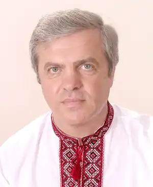
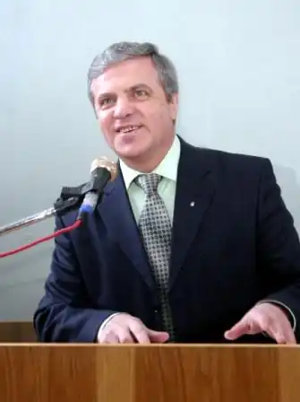
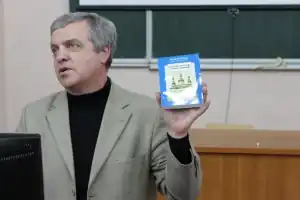
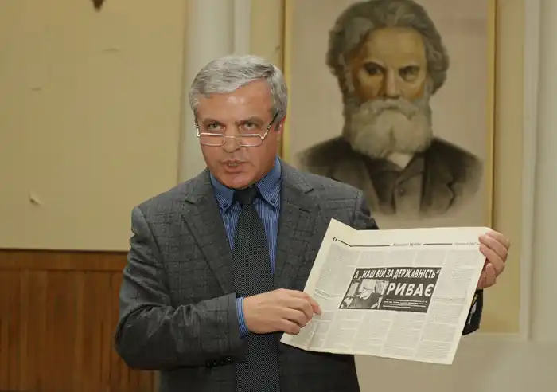
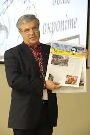

ТИМОШИК Микола Степанович [(псевд. М. Деснянич); 18.01.1956. с. Данина Ніжинського району Чернігівської області)] — журналіст, публіцист, учений, літературний критик, видавець.
Член Національної Спілки письменників України (з 2000), Національної Спілки журналістів України (з 1981). Перший лауреат премії імені Івана Огієнка (1995).
Автор трьох монографій, а також понад ста наукових публікацій.Упорядник, автор передмов і приміток до книг: "Юнкорівський блокнот" (1990), "Українське питання", в тому числі переклад з російської (1997), першовидань І. Огієнка в Україні – "Історія українського друкарства" (1994), "Історія української літературної мови" (1995), "Життєписи великих українців" (1999), праці А. Животка "Історія української преси". Упродовж ряду років викладає в університеті курси: "Основи видавничої справи і редагування", "Літературне редагування", "Авторське право", "Зарубіжна редакційно-видавнича справа", "Журналістська майстерність".